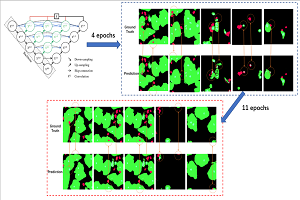
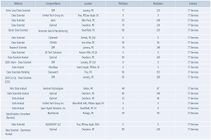

Research Projects
(Hover to see details)
Sarcasm Detection
This is a project aimed at detecting if a reddit comment is sarcastic or not.
GithubPropaganda Classification
This is a project aimed at classify the propaganda techniques used in news text.
GithubCourse Projects
(Hover to see details)

Cell Segmentation
This is a project aimed at presenting an advanced network to docell image semantic segmentation on multipleapplications such as microscope scanned cer-vical cancer cytology.
Github

Fetch Data
This is a project that allows users to check the situation of Data Scientist positions in Michigan and see the distribution of job recruitments over different companies, industries, sectors and etc.
Github